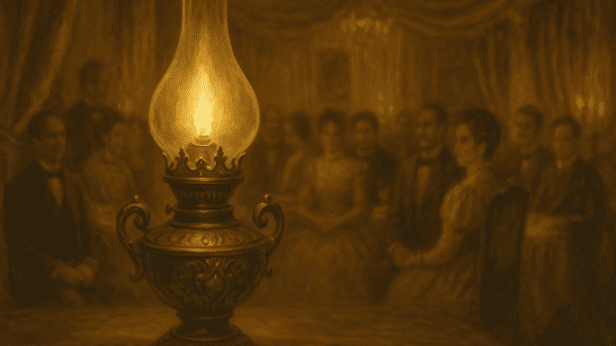

El Filibusterismo: The Work of the Head
José Rizal's second and final novel—a political awakening, a tale of tragedy, and a desperate call for reform.
A Dedication in Blood
The novel was fiercely dedicated to the memory of the martyred priests, the Gom-Bur-Za (Fathers Mariano Gomez, Jose Burgos, and Jacinto Zamora), who were executed by the Spanish colonial authorities in 1872. This dedication firmly established the novel's revolutionary political stance.

Noli Me Tangere (The Noli)
- A romantic novel.
- A work of the heart, a book of feeling.
- Contains more idealism and romance.
El Filibusterismo (The Fili)
- A political novel.
- A work of the head, a book of thought.
- More revolutionary, tragic, and filled with bitterness, hatred, pain, violence, and sorrow.

The Sacrifice in Ghent & The Financial Struggle
Why Ghent?
Rizal moved from Brussels to Ghent, Belgium for two main, interconnected reasons:
- The cost of printing was significantly cheaper than in Brussels.
- To escape from the enticing attraction of Petite Suzanne, allowing him to focus on the arduous task of finishing the novel.

Savior of the Fili: Valentine Ventura
During the printing process, Rizal faced acute financial distress, forcing him to pawn his jewels just to cover the initial payments. The printing almost halted entirely.
Valentine Ventura in Paris learned of Rizal's predicament and immediately sent him the necessary funds. With this crucial financial aid, the printing of El Filibusterismo was successfully resumed and completed.

The Fili Publishing Timeline
Start of Printing in Ghent
Rizal arrives in Ghent, selects the cheapest printing press, and uses his remaining funds to begin the work.
Financial Crisis
Funds run out. Rizal is forced to pawn his remaining jewels to make partial payments, but the printer threatens to stop the job.
Jewels PawnedIntervention of Ventura
Valentine Ventura sends vital funds from Paris, saving the novel from oblivion and allowing printing to continue.
The Fili Comes Off the Press
The finished copies are printed and dedicated to the Gom-Bur-Za. Rizal sends immediate copies to Ventura.
SuccessSimoun: The Complex Profile
Simoun / Crisostomo Ibarra
The Avenger | The Jeweler
The Black Eminence
A powerful figure, friend, and advisor of the Governor-General, pulling strings from behind the scenes in Malacañang.
Two Magnificent Obsessions
The Personal Revenge: Maria Clara
Simoun's plot is fundamentally driven by his past. His most immediate goal is to rescue Maria Clara from the oppression and solitude of the nunnery of Santa Clara, the love interest he left behind in the Noli.
This personal motive underscores the tragedy of the novel, as the grand revolutionary plan is intertwined with, and ultimately derailed by, his singular, desperate love. His first attempt at an armed uprising failed upon hearing the news of her death.
The Climax and Confession
The Perfected Plan: The Nitroglycerine Lamp
Simoun's final, devastating plan was to use a beautiful lamp as a wedding gift for Paulita Gomez and Juanito Pelaez. Only he and his associate, the medical student Basilio, knew the lamp was rigged with nitroglycerine.
When the wick burned low, the explosion would destroy the house, killing the Governor-General, friars, government officials, and all the guests, triggering a simultaneous revolt across Manila.
Isagani's Intervention
Basilio, watching the scene, warned his friend Isagani (who had been rejected by Paulita) to flee. Realizing Paulita was in grave danger, Isagani, despite his heartbreak, rushed into the house.
In a heroic act, he seized the lighted lamp and hurled it into the river, where the nitroglycerine exploded, saving the lives of the unsuspecting crowd.
The Final Confession
Simoun eluded the soldiers pursuing him and found refuge in the home of Padre Florentino. To escape capture, Simoun took poison.
As he lay dying, he confessed his true identity, his wealth, and his sinister plan for vengeance to the priest. Padre Florentino then cast Simoun's jewels into the sea, stating that true liberation could not be achieved through violence.

Other Works and Characters
Cabesang Tales
A character whose story mirrors the oppression faced by Rizal's own family. Cabesang Tales was dispossessed of his land by the friars.
In desperation, he resorts to violence and becomes the bandit chieftain named Matanglawin.
The Unfinished Third Novel
Rizal planned a third novel where politics would not find much space.
- Principal Role: Ethics, focused on Filipino habits and customs.
- Tone: Humorous, satirical, and witty.
- Language: Intended to be written in Tagalog for Tagalog readers.
Other Fragments
Rizal left several other unfinished works and fragments, demonstrating his prolific mind even under duress.
- Sultan Zaide
- Kamandangan
- "Makamisa" and "Dapitan"